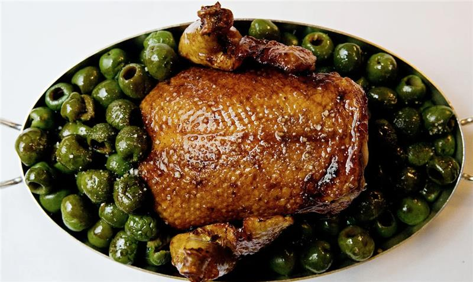
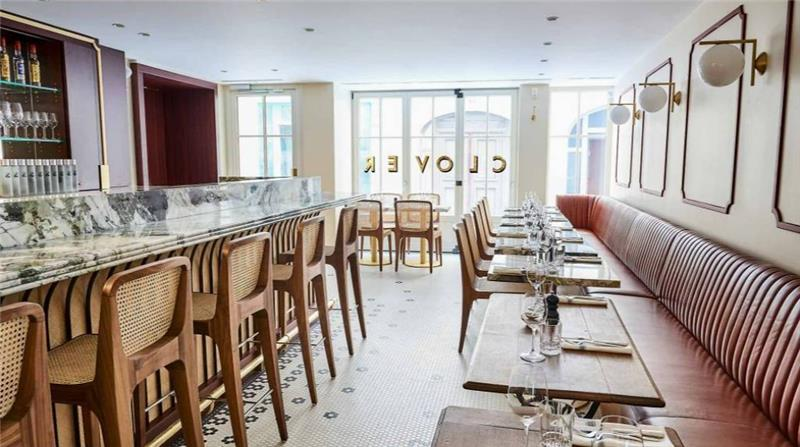
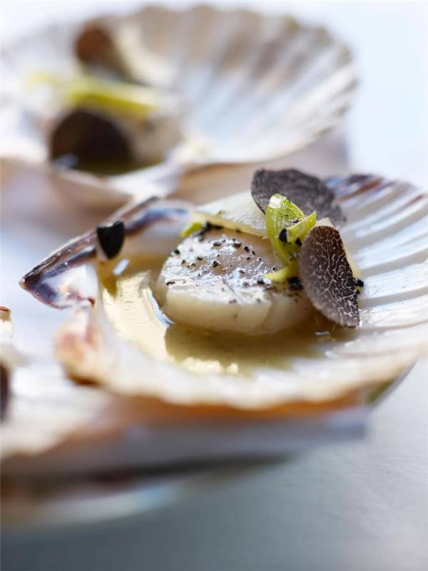

Ici, nous vous recommandons des restaurants que vous pouvez visiter lors de votre visite.
Gourmet

Il n'y a aucun doute, c'est un restaurant triplement étoilé Michelin avec des nappes blanches, un service impeccable, une décoration chic et une puissance culinaire
pour le prouver. La salle à manger est vaste et espacée : les meilleures tables sont celles devant la fenêtre qui donne sur le jardin intérieur de l'hôtel ( Le Bristol ).
La musique est feutrée, tout comme les conversations, ce qui permet de se concentrer sur une expérience culinaire à la limite du religieux. Pensez-vous à son caractère français
et pointilleux, même si vous ne penserez guère au décor une fois le premier plat d'Eric Frechon placé devant vous.
Grill Trèfle

Steakhouse français moderne qui convient aussi bien à un déjeuner d'affaires qu'à un long repas entre amis, Clover Grill, du chef primé Jean-François Piège, est un lieu
élégant prisé par la mode et les médias. Le chef a trouvé un endroit suffisamment grand pour accueillir une armoire à viande sur mesure ainsi que deux salles à manger.
Le bœuf est ici la star évidente du spectacle - filet, côte de bœuf ou en burger - mais ne négligez pas les entrées relevées, comme le tartare de tomates au basilic et straciatella,
ou un gravlax de bar sauvage au citron et à l'aneth. Il y a de divines crevettes braisées et du poisson local, servis avec un choix de sauces. Allez-y léger ou allez-y à fond, mais
quoi que vous fassiez, commandez les churros en dessert, dont vous rêverez longtemps après avoir quitté le restaurant.
La Tour d'Argent

Ce phare de la cuisine française face à la Seine a été construit comme une auberge au XVIe siècle, et ce n'est qu'au XIXe siècle qu'il est devenu le restaurant tel que nous le connaissons aujourd'hui.
S'il y a jamais eu un endroit où confier votre repas au chef, c'est bien à La Tour d'Argent. Ou si les surprises ne sont pas votre truc, optez pour le menu dégustation en plusieurs plats qui comprend
des plats signatures de la longue histoire du restaurant réactualisés par le chef Yannick Franques, Meilleur Ouvrier de France qui a repris les cuisines il y a trois ans, en en complément des propres
recettes du chef. Si vous aimez le canard, c'est un attrait de longue date pour les convives depuis la fin des années 1800. (Si la viande ne vous inspire pas, tout, du poisson aux plats à base de plantes,
est équilibré et sublime.) Avec 300 000 bouteilles dans la cave à vin et 15 000 différentes références, c'est absolument la destination des amateurs de vins. Sur le chemin de
l'ascenseur, faites attention aux photographies et coupures de journaux de toutes les personnalités de renommée mondiale, de JFK à Angelina Jolie, qui ont dîné au restaurant.